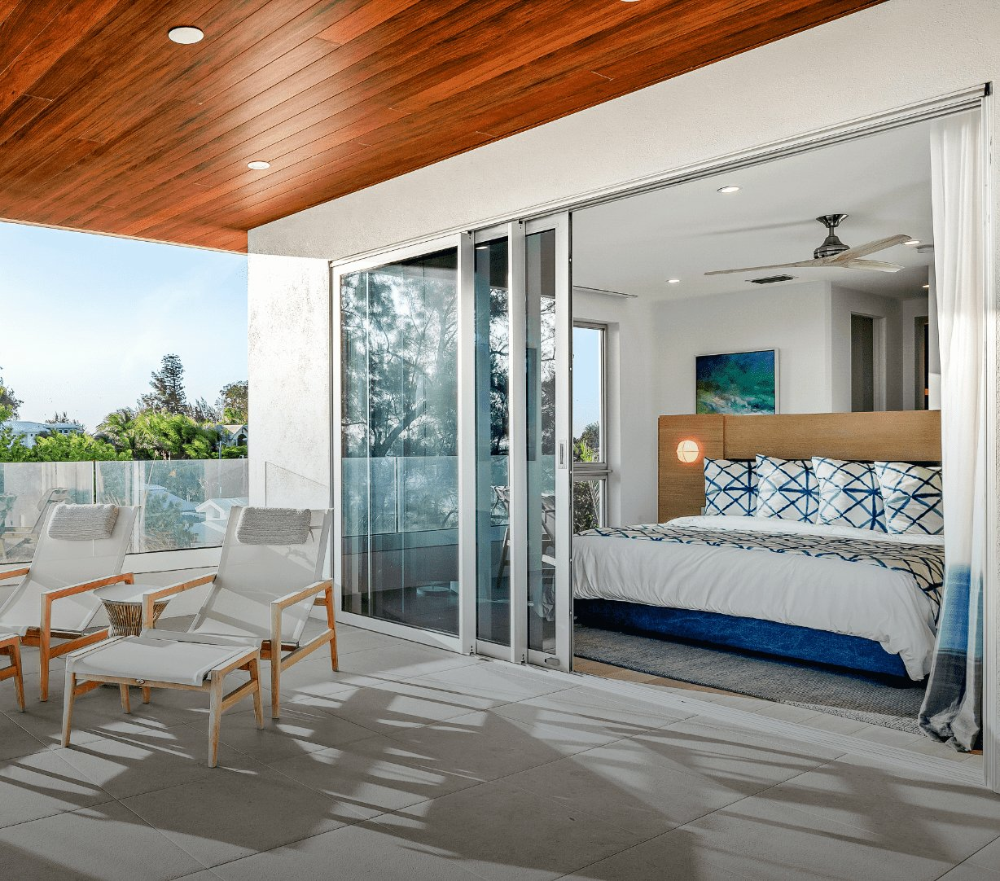
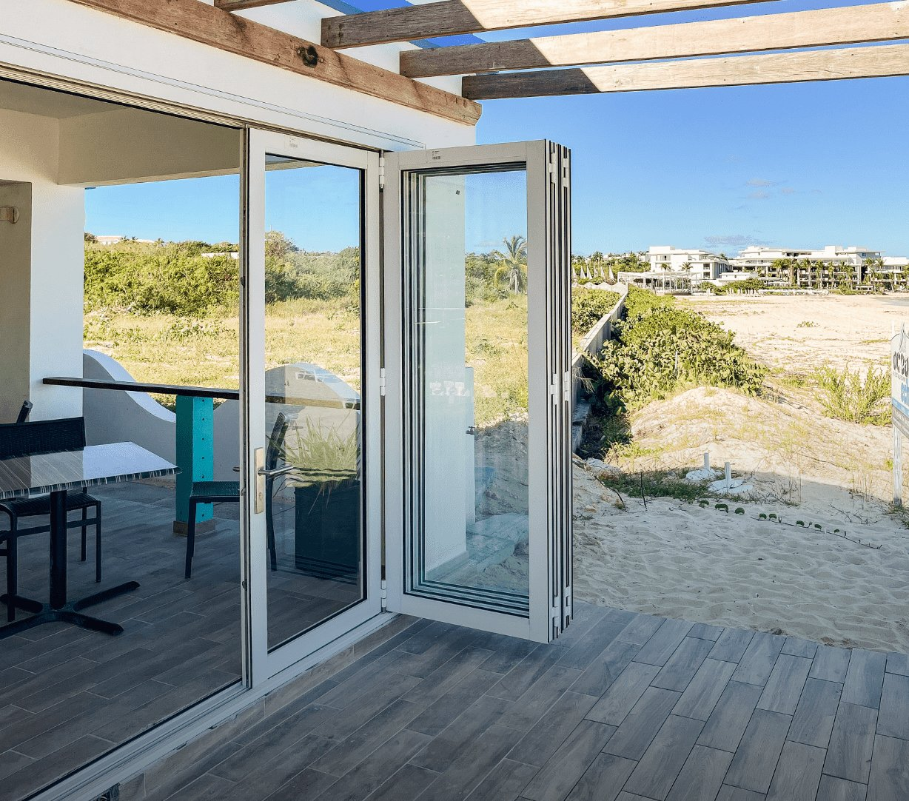
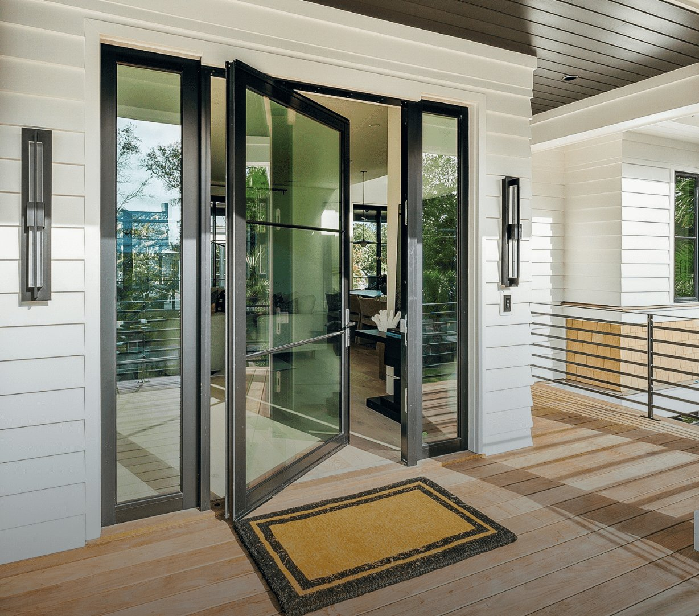
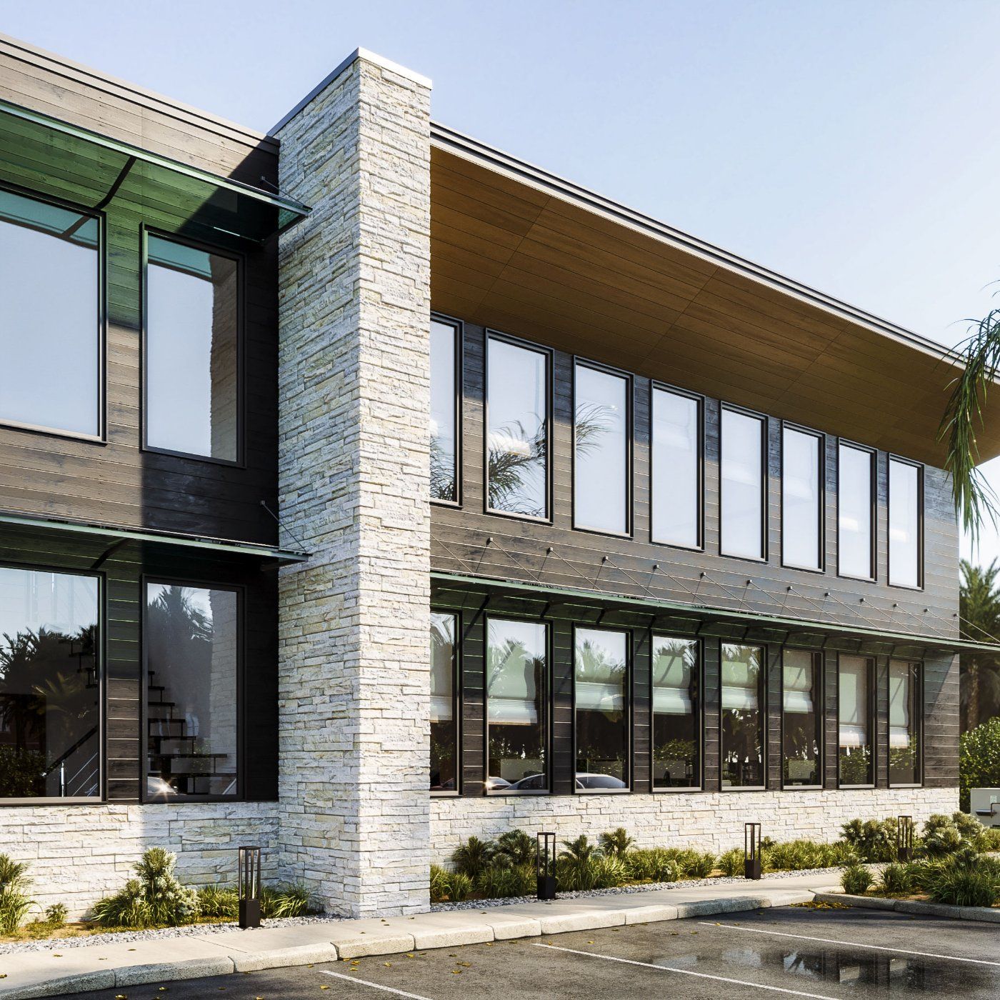
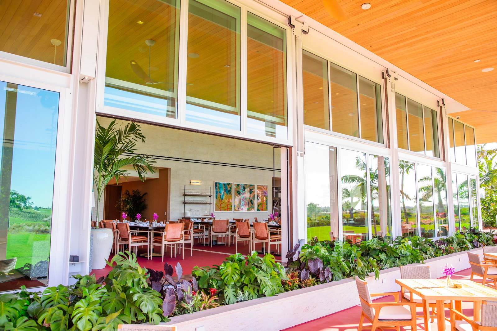
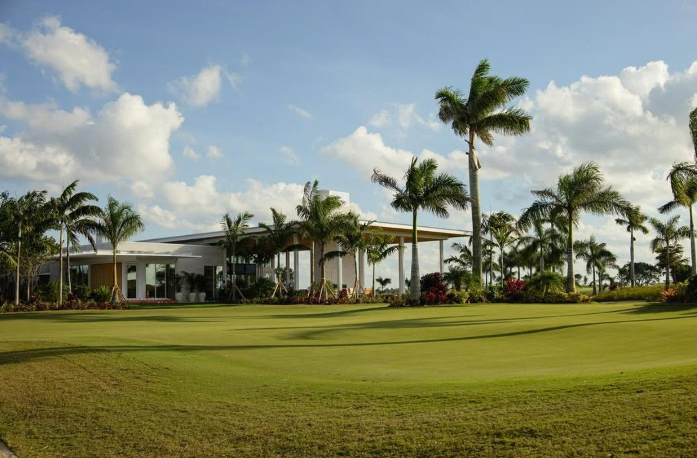

Euro-Wall Installer
Euro-Wall Installer -
Florida.
Installer for SGD2020 multi-slide, Vistafold folding, and pivot door systems. Installed on commercial projects across Florida.
Installer for SGD2020 multi-slide, Vistafold folding, and pivot door systems. Installed on commercial projects across Florida.
American Commercial Glass (ACG) is a Florida-based installer of Euro-Wall systems, including the SGD2020 multi-slide door, Vistafold folding door, and Euro-Wall pivot systems. ACG has installed Euro-Wall on landmark projects including Atlantic Fields (Hobe Sound), and Baron Shoppes at Tradition (Port St. Lucie). License: FL CGC #1531993.
ACG installs the full Euro-Wall commercial door lineup. Each system has a distinct structural and performance role. ACG matches system to opening, not the other way around.

Thermally broken aluminum multi-slide door system for wide commercial openings. Panels stack in opposing tracks to create a fully open wall plane. Used by ACG on country club amenity buildings, resort indoor-outdoor dining, and waterfront restaurants. Carries Florida Product Approval and Miami-Dade NOA on applicable configurations.

Accordion-style folding wall that pockets flush to the jamb when fully open. Flush-threshold profile for barrier-free transitions to exterior decks and pool areas. ACG uses Vistafold where the opening needs to disappear entirely - dining rooms that open onto terraces, clubhouse bars with outdoor seating, and resort cabana buildings.

Oversized single-panel pivot door systems with concealed floor and ceiling pivots. Used at primary entries where architectural scale is required - clubhouse main entries, resort lobbies, private club arrival sequences. Panel heights to 14 ft and beyond. ACG coordinates pivot hardware, structural header load path, and sill conditions during shop drawing phase.

Euro-Wall's fixed storefront and window system, designed to interface directly with the SGD2020, Vistafold, and pivot product lines using matched extrusion profiles. ACG uses DirectSet to complete the full building envelope on projects where Euro-Wall is specified throughout - eliminating the profile transitions and sealant joint failures that occur when mixing manufacturers.
Selected Euro-Wall installations from ACG's commercial project portfolio across Florida. These are completed scopes - not renderings.
Complete Euro-Wall envelope: DirectSet storefront, SGD2020 multi-slide doors, Vistafold folding walls, and pivot entry systems throughout the clubhouse.

Multi-phase resort renovation. Euro-Wall multi-slide systems on dining and event spaces, coordinated across multiple construction phases.

Multi-tenant retail and restaurant development in Tradition. ACG delivered Euro-Wall moving-glass wall systems alongside impact storefront across the tenant bays, so restaurant operators get the indoor-outdoor frontage their concepts are built around while the envelope still meets Florida impact code.

Discovery Land community. Euro-Wall multi-slide and lift-and-slide door systems on the golf house and amenity buildings at Atlantic Fields.

Resort clubhouse at Wild Blue at Waterside. Euro-Wall multi-slide systems for the indoor-outdoor amenity building, installed under demanding finish standards.

Lift-and-slide door systems on the course-side elevation of the golf house. Euro-Wall panels coordinated with structural header and interior finish transitions.
Euro-Wall commercial systems carry Florida Product Approval. On HVHZ projects (Miami-Dade, Broward), applicable configurations carry Miami-Dade NOA. ACG confirms the correct product approval for each project during the submittal phase - the specification, the approval, and the installer are aligned from the start. No substitutions mid-process.
Mixing a Euro-Wall SGD2020 with a different manufacturer's storefront creates a sealant joint between two different extrusion profiles - a known failure point in Florida wind-driven rain. When ACG specifies Euro-Wall SGD2020 alongside DirectSet storefront, both systems share the same extrusion system and are designed to interface. The joint between systems does not exist. This is the primary reason ACG uses Euro-Wall across the full envelope on its major club and hospitality projects.
ACG procures Euro-Wall direct. There is no distributor, no middleman installer, and no sub-sub arrangement. The contractor on your project is the same entity that placed the order with the factory, wrote the shop drawings, and has the manufacturer's support line. When a question arises on site, ACG does not have to escalate through a distribution chain to get an answer.
Structured for GCs, architects, and owners evaluating Euro-Wall for a Florida commercial project.
American Commercial Glass (ACG) is an installer of Euro-Wall systems across Florida. ACG installs the SGD2020 multi-slide door, Vistafold folding door, Euro-Wall pivot systems, and DirectSet storefront on commercial projects statewide, operating under Florida CGC #1531993. ACG has completed Euro-Wall installations at Atlantic Fields (Hobe Sound), Baron Shoppes at Tradition (Port St. Lucie), and Wild Blue Clubhouse, among other projects.
ACG installs four Euro-Wall product lines: (1) the SGD2020 multi-slide door system, a thermally broken aluminum sliding wall for wide commercial openings; (2) the Vistafold folding door, a flush-threshold accordion-style folding wall; (3) Euro-Wall pivot door systems for oversized single-panel entries; and (4) DirectSet storefront, a Euro-Wall fixed glazing system that uses matched extrusion profiles to interface directly with the operable door lines. ACG does not install manufacturers outside its partner list.
Yes. Euro-Wall commercial door systems carry Florida Product Approval, and select configurations carry Miami-Dade NOA for High-Velocity Hurricane Zone (HVHZ) projects. The applicable product approval depends on the specific system, configuration, panel size, and glazing selection. ACG confirms product approval applicability and Miami-Dade NOA eligibility during the submittal phase on every project. Projects in Miami-Dade and Broward counties are reviewed for HVHZ compliance as a standard part of ACG's pre-construction process.
Euro-Wall lead times vary by system, panel count, and glazing selection. As a general reference: SGD2020 multi-slide systems on mid-scale commercial projects typically run 14-20 weeks from approved shop drawings to delivery. Vistafold and pivot systems are similar in lead time range. ACG builds Euro-Wall fabrication lead time into the project schedule during the pre-construction phase and coordinates fabrication kickoff against the GC's projected framing completion date to avoid delivery ahead of rough opening readiness.
ACG's scope is the Euro-Wall system itself - supply, delivery, and installation. Structural rough opening preparation, header framing, and substrate work are typically by others (structural or framing contractor). ACG documents the required opening tolerances, header load path, sill pan conditions, and pocket cavity dimensions in shop drawings during the submittal phase. ACG coordinates directly with the GC so that rough opening conditions meet Euro-Wall installation requirements before ACG crews mobilize. If the opening is not within tolerance, ACG flags it before installation rather than proceeding.
ACG covers the full state of Florida from three offices: West Palm Beach (serving the Palm Beach, Treasure Coast, and Broward markets), Naples (serving Southwest Florida including Lee and Collier counties), and Tampa (serving Tampa Bay, Sarasota, and Central Florida). ACG has completed Euro-Wall installations from Miami-Dade north to Palm Beach Gardens, Hobe Sound, Fort Lauderdale, and across Southwest Florida. Out-of-state commercial projects are evaluated on a case-by-case basis.
SGD2020 multi-slide, Vistafold folding walls, pivot entries, and DirectSet storefront - scoped, permitted, and installed by ACG. Send drawings for a proposal.
Detailed installer pages for the use cases and markets where Euro-Wall demand is highest. Restaurant-specific, Fort Lauderdale-specific, and additional Florida market pages with HVHZ NOA documentation and project references. Sourced factory specs: Euro-Wall Vista page.
A short selection of named ACG installations using Euro-Wall systems. Each project page includes scope, glass make-up, code references, and an FAQ block.